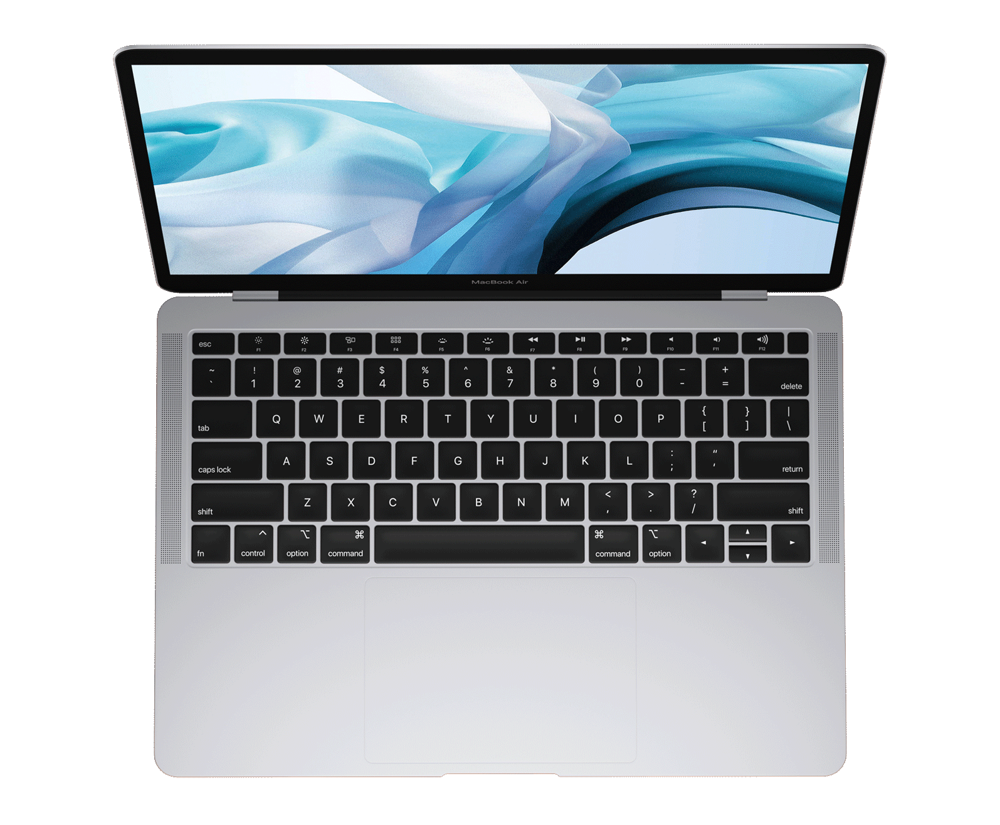

-
8 çekirdekli CPU’ya, 7 çekirdekli GPU’ya ve 16 çekirdekli Neural Engine’a sahip Apple M1 çip
-
8 GB birleşik bellek
-
256 GB SSD depolama
-
True Tone özelliğine sahip Retina ekran
-
Arkadan Aydınlatmalı Magic Keyboard - Türkçe Q Klavye
-
Touch ID
-
Force Touch trackpad
-
ki adet Thunderbolt/USB 4 bağlantı noktası
-
Apple M1 çip hakkında daha fazla bilgi edinin >